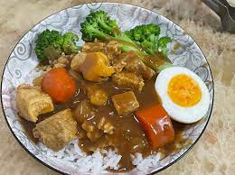
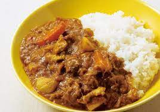
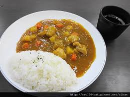

2.買一隻去骨雞腿肉，雞肉一定要去傳統市場買才會新鮮、好吃。請老闆幫你去骨、切丁，骨頭可以拿來燉高湯。
3.去骨雞腿肉灑上少許鹽巴、胡椒粉，放置約十分鐘，再與紅椒粉、咖哩粉、原味優格(約一杯）充分拌勻後備用。
4.磨菇50公克切半(不愛蘑菇可省略)、洋蔥1/2顆、紅蘿蔔1顆、馬鈴薯3顆，然後切塊備用。
5.熱鍋，加入奶油，爆香薑末、蒜末，再加入醃好的去骨雞腿，以中火炒至雞肉變白色，然後加入以上食材拌炒，再加入蔬菜高湯燉煮，水滾後再繼續用中火煮約20-30分鐘，總之就是要將所有食材煮軟。
6.將咖哩塊約4-6塊先切成片，再放入湯內均勻攪拌，就可以熄火囉！
  